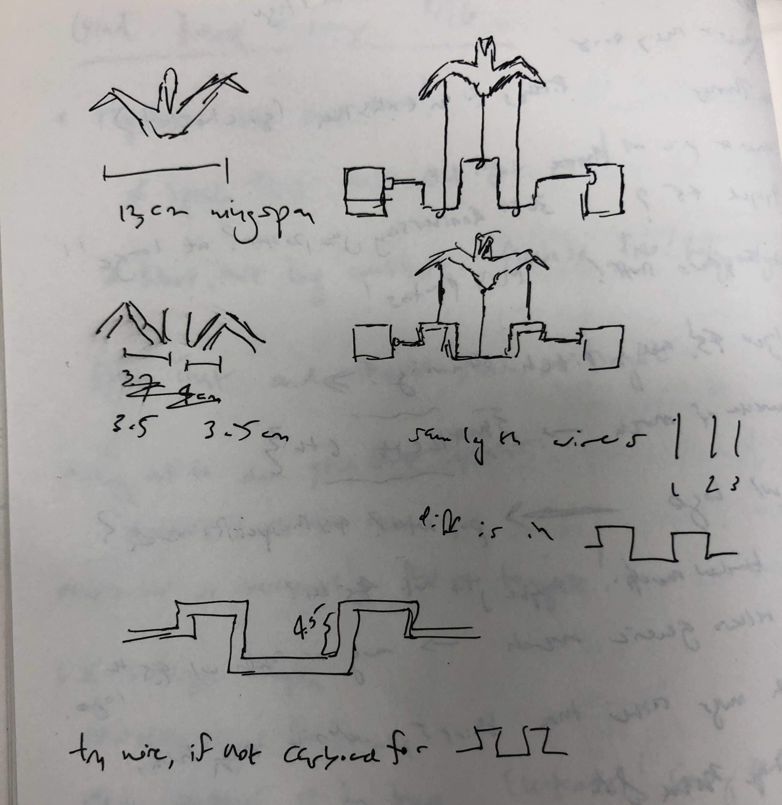
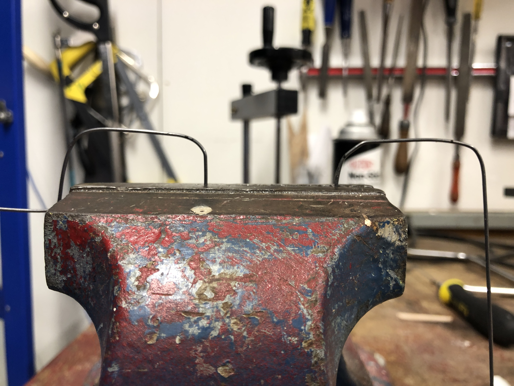
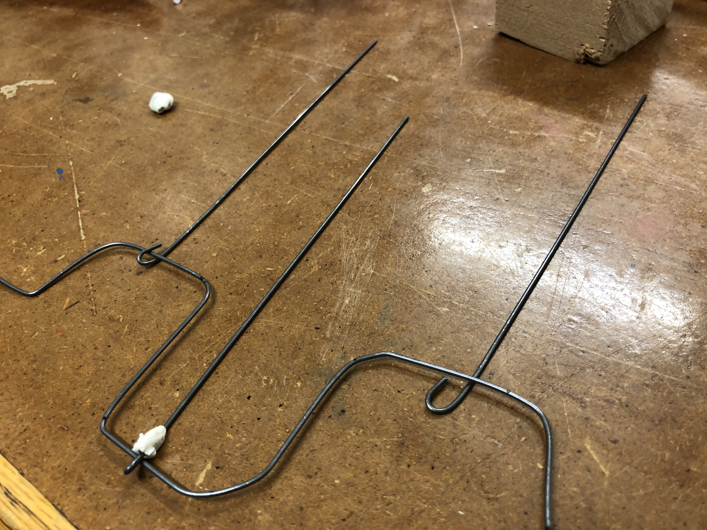

Week 3: Kinetic Sculpture
Not All Those Who Solder Are Lost
This week, we were tasked with creating a kinetic sculpture -- essentially, anything that moves by human intervention or an affixed motor. I became a huge fan of Arthur Ganson after seeing his spectacular exhibit at the MIT Museum, and I perused some of his projects online, hoping to spark some inspiration. I eventually decided to do something in the style of Machine With 23 Scraps of Paper which beautifully mimics bird flight; I envisioned a majestic paper crane flapping its wings.
With some indispensable guidance from Nathan, off I set to try to make a wire axis of alternating heights that I could attach to the DC motor. This would spin three vertical wires of identical height that would push the birds wings or center of mass up and down alternatingly. I quickly came to grips, if you will, with the fact that I would need to do some pain-staking wire bending. After giving it a freehand go (and ending up with a squiggly mess), I started using the clamp and a fresh set of pliers and got dramatically improved (read: far more orthogonal) results.
I had to be very careful to measure the length of the wire to align with those of the body of the paper crane I wished to use. After bending the wire to create the appropriately sized teeth, I prepared my DC motor and successfully soldered the leads! (After my struggles in our class demo, redemption was sweet). The central mechanism of my sculpture (solder and all) is visible in the video to the right:
Cranking Cranes
Now that I had the barebones driving mechanism for the sculpture, it was time for the multifarious accoutrements. The first thing I did was to make the stand for the motor and an oppositional stand to catch the loose wire and let it both rest and revolve. I had fun working the toothy Japanese saws to make these the right size!

At the left here is my stand-making process and (nearly) finalized products. Eventually I decided that a rubber band would be more helpful for immobilizing the motor than making a gutter for it to rest in.
My next order of business was making the three rotating rods that would connect to the central axis. I wanted these to be identically long and be able to rotate around that bar with the creation of a small eye at the base of the each wire. These proved to be hard to close, but I mustered all my strength and channeled it into the needlenose pliers to close these eyelets.

I then extruded the desired geometry and added 3.00mm fillets (as visible to the right). Pretty quickly, I realized that I made my slots too deep such that when the arc pieces were connected, they would probably interfere with each other and not link properly. So I went back to the literal drawing board (er, sketch board I suppose!) and adjusted the slots' length to be about an eigth of the entire shape's length instead of a fourth. I then re-extruded, re-filleted, and projected this to make the final DXF file.

I then turned my attention to making the arc pieces. I constructed these by making two concentric circles and then isolating the top right quadrant with solid lines. I made slots that were commensurate in size to those in my grid piece. I extruded and projected the piece (this time not filleting), and then exported the DXF file.

At the laser cutter, I made an array of 12 arc pieces and 6 grid pieces for constructing my sphere. I tested out one of each piece initially to ensure there was a snug fit, and as with doge beforehand, I was lucky on the first go-round! I then printed the rest of my array and assembled the sphere.


At the left is the final product! (Pictured both with and without doge) Future plans include ensuring my real life dog doesn't eat it and/or converting it into a Christmas ornament.